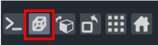
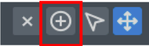

Welcome to the PopSeg Tool!
This application helps with the analysis and visualization of cellular images. Here's how to get started:
Initial Setup
Begin by navigating to the Settings tab to configure the application settings. Ensure all configurations are saved before proceeding.
Creating a New Project
Go to the Project tab to create a new project. Here, you can upload images directly into the project for processing.
Control Point Setting - Semi-Automatic Merging
This step is necessary if the semi-automatic algorithm has been selected in the "Settings" file. Run a first time the algorithm, it will produced the new images "full_image1.tif" and "full_image2.tif" based on the settings information. On those images, the control could be set and then re run the algorithm.
- Select the project and click on the images to open them.
- Navigate to "Set Control Points" from the navigation bar.
- Switch to 2D view by clicking the cube icon on the bottom left.

- Add control points by selecting the "+" symbol and clicking on the image.

- Press "s" to save the points. A confirmation will appear in the bottom left corner.
Running Programs
- Start Merging: Fuse images based on settings for generating new images
- Automatic: Nothing has to been done besides completing the settings
- Semi-Automatic: Need to run it twice. First time, the processed images will be added to the project. At this point, the control points must be set and then run it a second time to complete the merging process.
- Generate Excel: Generate a file containing the cell populations matching and other information on the nuclei (oritentation, circularity or position). It is also at this point that the phalloidin TAG will be analyzed.
Project Information and Outputs
Each project has a "Show Project Info" button which displays values obtained from analysis runs. Adjust these values in the Excel file to test different configurations.
More information
If more information is necessary, click on this link to visit the GitHub page of this project.